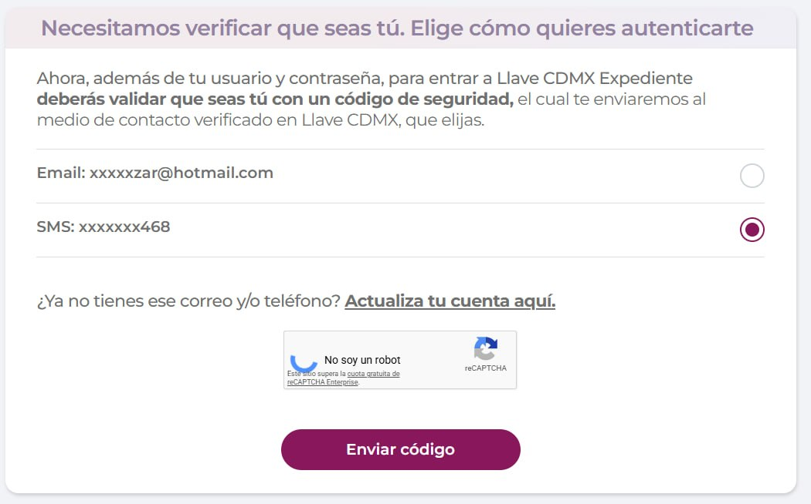
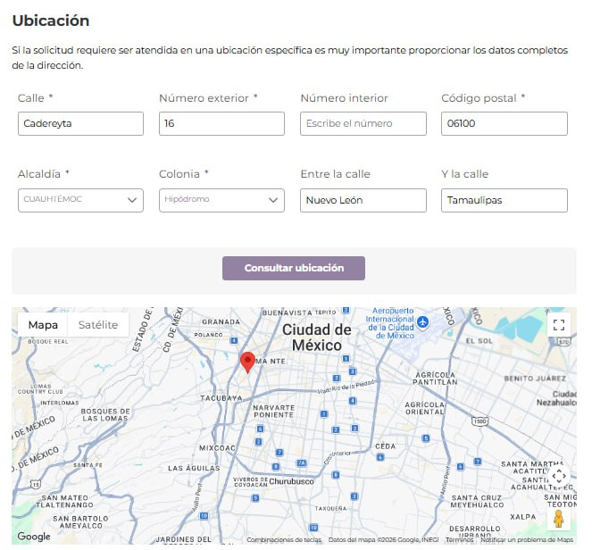
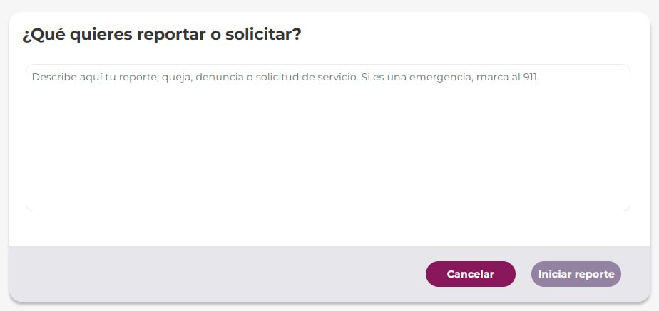

https://311locatel.cdmx.gob.mx/
Desde aquí puedes iniciar tu denincia o consultar otra denuncia que ya hayas enviado. Para iniciar una denuncia, debes dar click en el botón de "Iniciar reporte SUAC":
Aquí debes iniciar sesión con tu correo y constraseña. Si no tienes cuenta, puedes crear una dando click en "Crear cuenta". Si tienes más dudas para crear tu cuenta...

Después de ingresar tu correo y contraseña, te pedirá que escojas entre un correo o mensaje de texto celular. Allí te mandará un código de seguridad para terminar de iniciar sesión.

Ahora si, ya puedes meter la denuncia. Te piden la dirección de los hechos:

Después, te pide una descripción del problema. Aquí puedes poner la misma descripción que pusiste arriba, junto con el fundamento legal que te compartimos.

Luego, te pide referencias adicionales sobre la dirección de los hechos. Estos son opcionales.
También te permite subir evidencia en fotos o documentos pdf. Esto es opcional, pero recomendado.
Por último, te da la opción de compartir los datos con las autoridades. Esto es necesario para darle seguimiento y asegurar que la denuncia avance.
Una vez completados los datos, le debes dar click en Enviar reporte en la esquina derecha al final de la página.

Una vez que le diste click, te confirma que la solicitud fue registrada con un folio. Guarda este folio para darle seguimiento a tu denuncia.